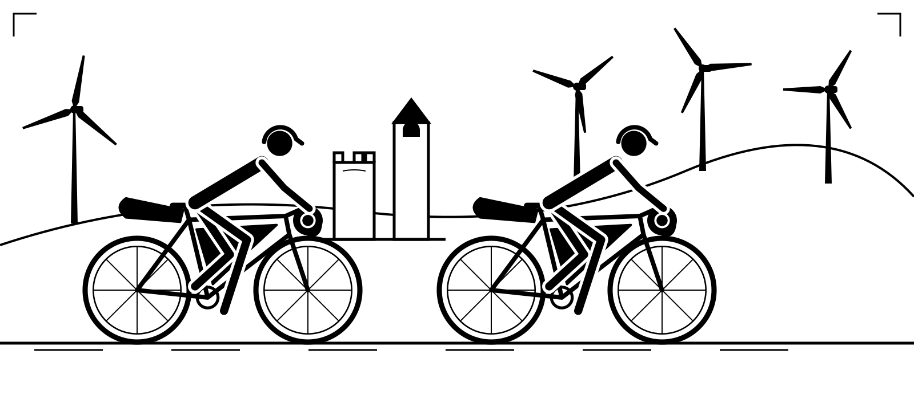
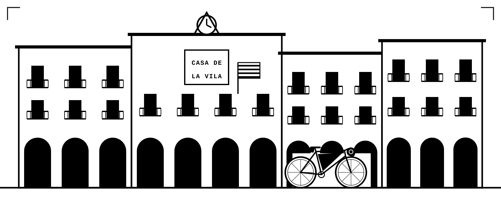
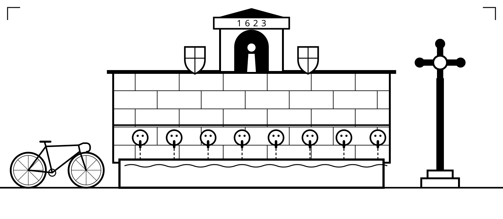
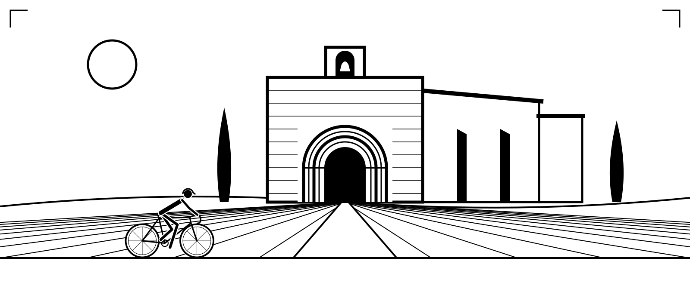
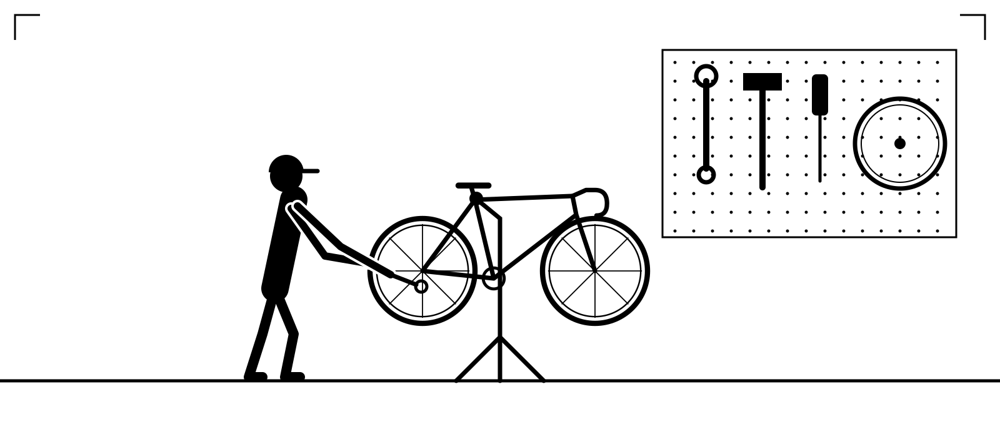

“Life is like riding a bicycle. To keep your balance, you must keep moving.” — Albert Einstein ✦ “It never gets easier, you just go faster.” — Greg LeMond ✦ “Ride as much or as little, or as long or as short as you feel. But ride.” — Eddy Merckx ✦ “Don’t buy upgrades, ride up grades.” — Eddy Merckx ✦ “Shut up, legs!” — Jens Voigt ✦ “It is by riding a bicycle that you learn the contours of a country best, since you have to sweat up the hills and coast down them.” — Ernest Hemingway ✦ “Bicycling has done more to emancipate women than anything else in the world.” — Susan B. Anthony ✦ “Learn to ride a bicycle. You will not regret it, if you live.” — Mark Twain ✦“Life is like riding a bicycle. To keep your balance, you must keep moving.” — Albert Einstein ✦ “It never gets easier, you just go faster.” — Greg LeMond ✦ “Ride as much or as little, or as long or as short as you feel. But ride.” — Eddy Merckx ✦ “Don’t buy upgrades, ride up grades.” — Eddy Merckx ✦ “Shut up, legs!” — Jens Voigt ✦ “It is by riding a bicycle that you learn the contours of a country best, since you have to sweat up the hills and coast down them.” — Ernest Hemingway ✦ “Bicycling has done more to emancipate women than anything else in the world.” — Susan B. Anthony ✦ “Learn to ride a bicycle. You will not regret it, if you live.” — Mark Twain ✦
Bike experiences · Store · WorkshopSanta Coloma de Queralt
La Roda





01
Experiences
Guided rides and multi-day trips across Catalonia, from quiet inland lanes to the Pyrenees and the Costa Brava.